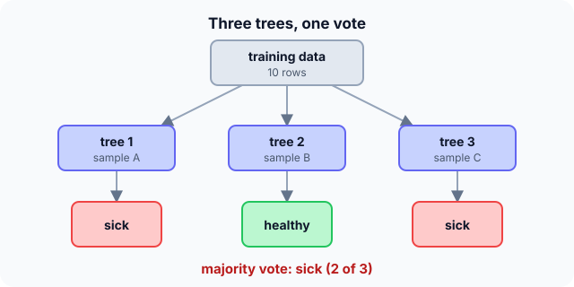

Prerequisites
- Decision trees.
- Bias–variance trade-off.
- Sampling with replacement.
The analogy
Everyday analogy
Ask one friend to guess the number of sweets in a jar and they may be far off. Ask a hundred people who each saw the jar from a different angle and average their guesses, and you're usually very close.
A random forest is that crowd. Each tree sees a different sample and different features, so their mistakes differ and largely cancel out in the vote.
How it works
Two kinds of randomness: Bagging: each tree trains on a bootstrap sample ($n$ rows drawn with replacement). Feature sampling: each split considers only a random subset of features (often $\sqrt{m}$ of $m$).
Start with three trees voting
Three trees, each trained on its own bootstrap sample. A new patient arrives. Predict, then open "Check".
Example: predict before you read
Step 1. Tree votes are sick, healthy, sick. Predict the forest's answer.
Check
Sick, by majority 2 to 1. With probability estimates, the forest would report 2/3 for sick.
Step 2. Cover the next line and guess: in a bootstrap sample of 10 rows drawn with replacement, are all 10 rows included?
Check
Usually not. Some rows appear twice or more, and on average only about 65% of the distinct rows appear (about 63% for large $n$).
Step 3. Why give each tree only some of the features at each split?
Check
Otherwise every tree would split on the same strongest feature first and the trees would be too similar; averaging similar trees cancels little.

Quick recall: Before reading further, cover the text above and say out loud: what two sources of randomness make the trees different?
Check your answer
Each tree trains on its own bootstrap sample, and each split considers only a random subset of features.
Finish the picture: why averaging helps
Suppose each tree's prediction has variance $\sigma^2 = 1$, and any two trees have correlation $\rho$.
- 100 completely independent trees ($\rho = 0$). Predict the variance of their average.
Check
$1/100 = 0.01$: averaging independent errors cancels them.
- 100 trees with $\rho = 0.3$. Predict the variance, and what that tells you.
Check
$0.3 + 0.7/100 = 0.307$. Correlation sets a floor, so random feature sampling, which lowers $\rho$, matters as much as the number of trees.
Quick recall: Without scrolling up, say out loud: what are out-of-bag rows used for?
Check your answer
About a third of the rows are left out of each tree's sample; predicting them with the trees that didn't see them gives a free validation estimate.
Full worked calculation
One forest of three trees on a tiny dataset of 5 rows, followed through every stage: drawing a bootstrap sample, the rows left out, the vote, and why averaging many trees lowers the error.
| Tree | Bootstrap draw (row numbers) | Distinct rows | Out-of-bag rows | Vote for the new email |
|---|---|---|---|---|
| 1 | 2, 4, 4, 1, 5 | 4 of 5 | 3 | spam (1) |
| 2 | 1, 1, 3, 5, 3 | 3 of 5 | 2, 4 | not spam (0) |
| 3 | 5, 2, 3, 2, 4 | 4 of 5 | 1 | spam (1) |
-
1Draw a bootstrap sample
$$\text{tree 1: rows } 2, 4, 4, 1, 5 \quad (5 \text{ draws with replacement})$$Each tree gets its own dataset of the same size $n = 5$, drawn with replacement. Row 4 is picked twice, row 3 not at all. Every tree therefore sees a slightly different version of the data.
-
2How many distinct rows on average?
$$P(\text{row never picked}) = \left(1 - \tfrac{1}{5}\right)^5 = 0.8^5 = 0.328 \;\Rightarrow\; \text{distinct share} = 1 - 0.328 = 0.672$$Each of the 5 draws misses a given row with probability 4/5. On average a tree sees 67% of the rows; for large $n$ this tends to $1 - 1/e \approx 63.2\%$.
-
3Out-of-bag rows give a free test set
$$\text{OOB}(\text{tree 1}) = \{3\}, \quad \text{OOB}(\text{tree 2}) = \{2, 4\}, \quad \text{OOB}(\text{tree 3}) = \{1\}$$The rows a tree never saw can test that tree honestly. Averaging these out-of-bag predictions over all trees estimates the forest's accuracy without a separate validation set.
-
4Random features at every split
$$d = 9 \text{ features} \;\Rightarrow\; \text{try } \sqrt{9} = 3 \text{ random features per split}$$Bootstrapping alone still lets every tree start with the same strong feature. Restricting each split to a random subset forces the trees to differ, which is what makes their errors less correlated.
-
5Vote
$$\text{votes} = [1, 0, 1] \;\Rightarrow\; \text{spam with } \tfrac{2}{3} \approx 0.67$$For classification each tree votes and the majority wins. The vote share doubles as a probability estimate. For regression the trees' outputs are averaged instead.
-
6Why more trees help: variance of the average
$$\operatorname{Var} = \rho\sigma^2 + \frac{1 - \rho}{B}\sigma^2, \quad \sigma^2 = 1, \rho = 0.3: \quad B = 1 \to 1, \quad B = 10 \to 0.37, \quad B = 100 \to 0.307$$Each tree has variance $\sigma^2$ and the trees are correlated by $\rho$. The second term shrinks as $1/B$, the first does not: going from 1 to 10 trees cuts the variance by 63%, from 10 to 100 only by another 6%. Lowering $\rho$ (random features) lowers the floor.
What the numbers tell us
A random forest is many deep trees, each trained on a bootstrap sample (about 63–67% distinct rows) with random features per split, combined by a vote.
More trees never hurt accuracy, but the gain flattens quickly; the floor $\rho\sigma^2$ can only be lowered by making the trees more different.
The rule in plain words
For each of $B$ trees: draw a bootstrap sample, grow a deep tree, and at each split choose among a random subset of features.
Predict by majority vote (classification) or average (regression) across the trees.
Quick recall: Before you read the code, describe how a forest combines its trees' answers, in your own words. Then check below.
Check your answer
For classification, count the votes for each class and return the class with the most; for regression, average the trees' predictions.
The code
Read this code after you have done the vote by hand. It will make more sense.
int majority_vote(int votes[], int t) { /* votes are 0 or 1 */
int ones = 0;
for (int i = 0; i < t; i++) ones += votes[i];
return 2 * ones > t ? 1 : 0;
}
double unique_fraction(int n) { /* expected share of distinct rows in a bootstrap sample */
return 1 - pow(1 - 1.0 / n, n); /* tends to 1 - 1/e = 0.632 */
}Definition
What you just did, in one line: a random forest is an ensemble of decision trees, each trained on a bootstrap sample with random feature subsets at each split, combined by majority vote or averaging.
flowchart LR
D["training data"] --> S1["bootstrap sample 1"] --> T1["tree 1"]
D --> S2["bootstrap sample 2"] --> T2["tree 2"]
D --> S3["bootstrap sample B"] --> T3["tree B"]
T1 --> V["vote / average"]
T2 --> V
T3 --> V
How costly is it?
Quick recall: Before looking at the formula, predict: does adding more trees make a random forest overfit?
Check your answer
No. More trees only make the average more stable; the error levels off rather than rising.
The variance of an average of $B$ trees, each with variance $\sigma^2$ and pairwise correlation $\rho$:
$$\operatorname{Var}\Big(\frac{1}{B}\sum_{b=1}^{B} T_b\Big) \;=\; \rho\,\sigma^2 + \frac{1 - \rho}{B}\,\sigma^2$$| Phase | Cost | Why |
|---|---|---|
| Training | $B$ × (one tree) | Trees are independent, so training parallelises |
| Prediction | $O(B \cdot \text{depth})$ | Every tree is evaluated |
| Out-of-bag estimate | free | Uses the rows each tree didn't see |
Best for: tabular data, as a strong default with little tuning, for both classification and regression.
- Pro: Much more accurate and stable than a single tree.
- Pro: Little tuning, no scaling, gives feature importances and a free out-of-bag score.
- Con: Less interpretable than one tree.
- Con: Large and slower to predict than a single model; can be beaten by tuned boosting.
Warning
Feature importances from a random forest can mislead: they favour features with many distinct values and split importance between correlated features. Check with permutation importance.
Exam tip
Name both randomness sources (bootstrap rows, random features per split) and say what they do: they make the trees less correlated so that averaging cuts variance.
Common mistakes
- Thinking more trees cause overfitting; they don't, they just cost more.
- Forgetting feature sampling, which leaves the trees highly correlated.
- Confusing random forests (parallel, averaging) with boosting (sequential, correcting errors).
Try it yourself
Exercise 1 (warm-up)
Five trees vote 1, 0, 1, 1, 0. What does the forest predict, and with what estimated probability?
Hint
Count the ones.
Answer
Class 1, with 3/5 = 0.6.
Exercise 2 (a bit harder)
Each tree has variance $\sigma^2 = 4$ and correlation $\rho = 0.5$. Compute the variance of the average for $B = 10$ and $B = 1000$. What does it show? Write your answer down before you open it.
Show answer
$B = 10$: $2 + 0.2 = 2.2$. $B = 1000$: $2 + 0.002 \approx 2.0$. Beyond a point more trees barely help; only lowering $\rho$ can reduce the floor of 2.
Did you know?
Did you know?
Leo Breiman introduced random forests in 2001, building on his own bagging (1996) and Tin Kam Ho's random subspace method.
Microsoft's original Kinect estimated body pose from depth images with a random forest, deciding for each pixel which body part it belongs to.
Key points to remember
If you remember one thing from each line, remember the because.
- Averaging trees reduces variance because their different errors partly cancel.
- Bootstrap samples make trees differ because each sees a different mix of rows.
- Feature sampling matters because it lowers the correlation between trees, which sets the variance floor.
- More trees don't overfit because they only make the average more stable.
- Out-of-bag rows give a free test score because each tree never saw about a third of the data.
Self-check questions
Answer these in order, out loud. They follow the page, so your answers become the script of your video.
- How is a random forest like a crowd guessing sweets in a jar?
Sample answer
Each guess is noisy, but the average of many independent guesses is close, because their errors cancel.
- Three trees vote sick, healthy, sick. What does the forest say?
Sample answer
Sick, by majority 2 to 1, with an estimated probability of 2/3.
- Why does
unique_fractiontend to about 0.632?A good answer gives the chance a row is never picked.
Sample answer
Each draw misses a given row with probability $1 - 1/n$; after $n$ draws that's $(1 - 1/n)^n \to 1/e \approx 0.368$, so about 63.2% of rows appear.
- So what is a random forest, in one sentence?
Sample answer
An ensemble of decision trees trained on bootstrap samples with random feature subsets, combined by voting or averaging.
- Why does lowering the correlation between trees matter more than adding trees?
A good answer uses the variance formula.
Sample answer
The variance is $\rho\sigma^2 + (1 - \rho)\sigma^2/B$; more trees only shrink the second term, while $\rho\sigma^2$ stays as a floor.
- What do training and prediction cost?
Sample answer
Training is $B$ independent trees (parallelisable); prediction runs every tree, $O(B \cdot \text{depth})$.
- Give two pros and two cons.
Sample answer
Pros: accurate and stable, little tuning. Cons: less interpretable, and larger and slower than one tree.
- If you had to teach this to a friend in 2 minutes, what would you leave out, and why?
Sample answer
I'd leave out the variance formula and out-of-bag details. I'd keep the crowd analogy, the three-tree vote, and "bootstrap rows + random features, then vote".
External resources
- scikit-learn: Forests of randomized trees: parameters, out-of-bag scores and importances.
- Wikipedia: Random forest: history and theory.
- Google: Random forests: bagging and feature sampling explained.
Videos
- YouTube search: StatQuest random forests: StatQuest builds a forest step by step.